Edge Solver¶
The edge solver allows users to select edges to create segments. Segments can only have a maximum of two unattached junctions to support linear referencing (measures / chainage).
Loops and circular segments are allowed. The use cases below detail the currently supported network types in wayfarer.
Supported Segments¶
The following network types are supported by the edge solver.
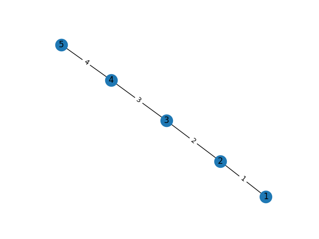{kind=link}
As above but with nodes in different orders:
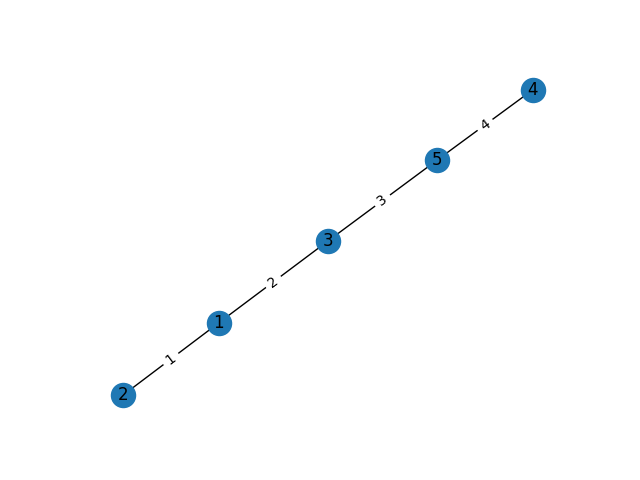{kind=link}
A loop at either end of the segment:
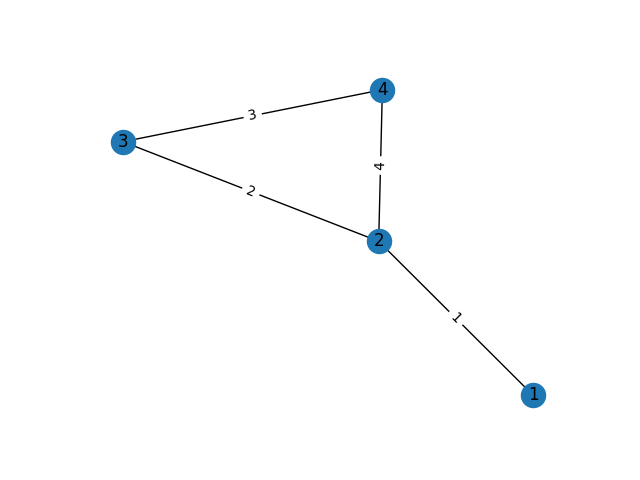{kind=link}
A segment with loops at both ends:
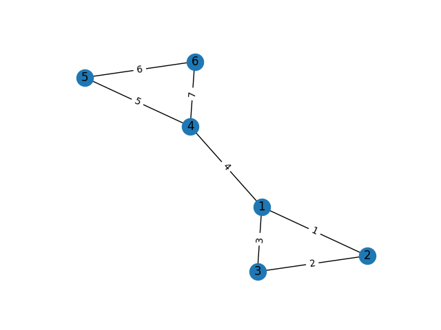{kind=link}
A circular segment composed of several edges:
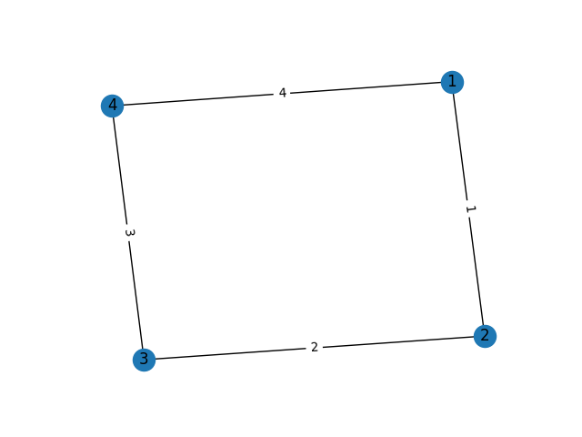{kind=link}
A segment with an edge at one end that loops back onto itself:
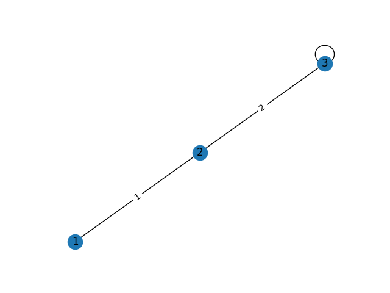A two segments with two further segments in the middle both connected to the same start and end nodes:
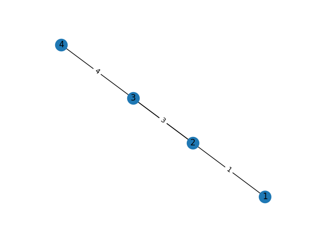{kind=link}
Valid but Unsupported Segments¶
It should be possible to implement the following types if required. The current edge solver however does not support them.
Loops in the middle of the segment are unsupported.
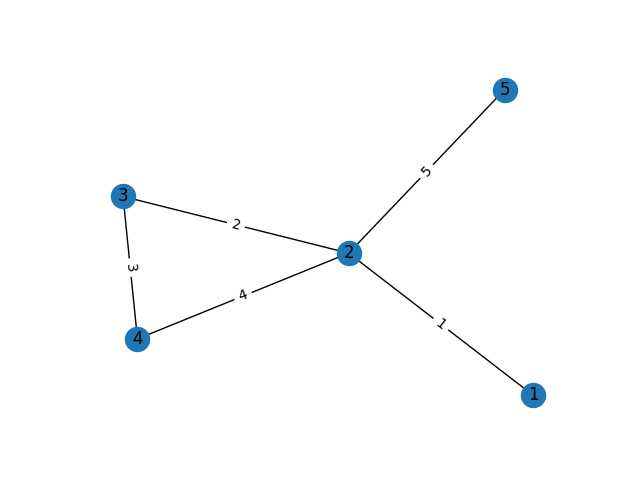{kind=link}
This also excludes loops in the middle with loops at the start and ends.
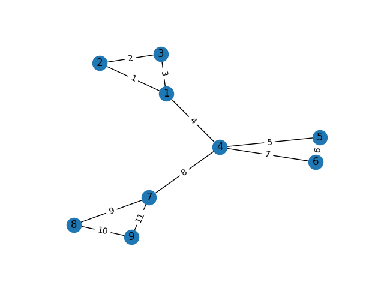{kind=link}
The case below is where a road joins back to itself (a single edge loop).
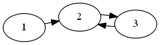Invalid Segments¶
These segments have more than 2 ends. This means it is impossible to apply linear referencing to them, so they will never be supported by the edge solver.
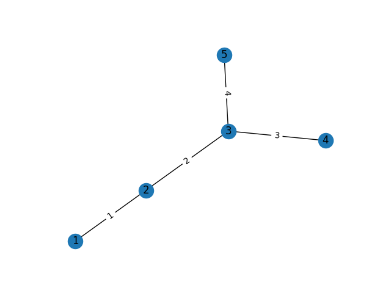{kind=link}